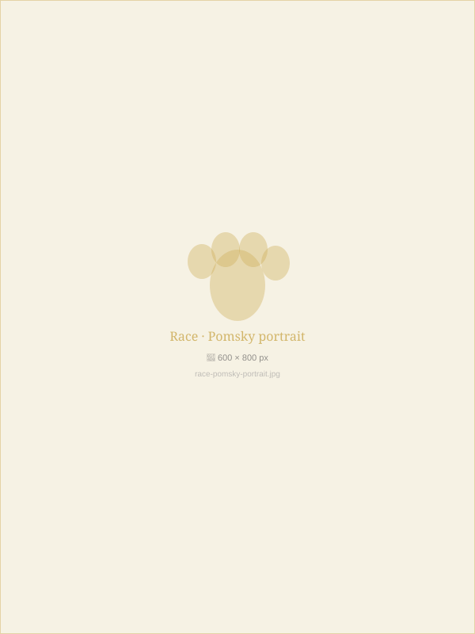
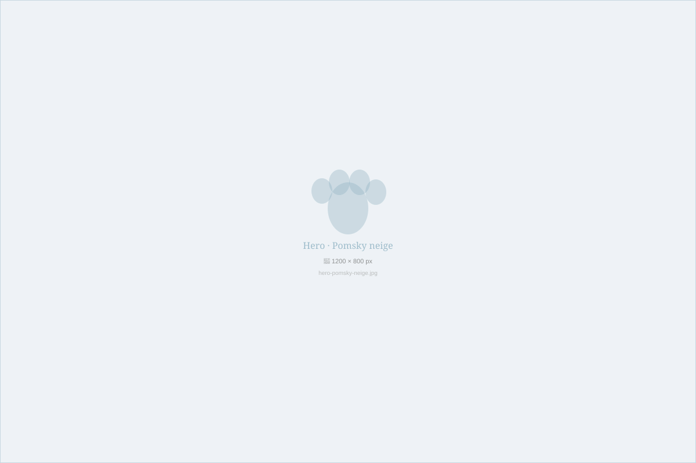
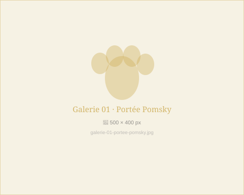
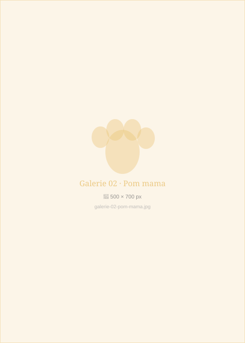
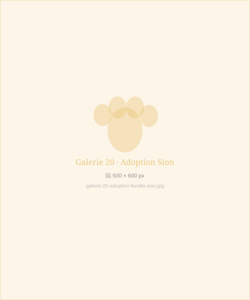
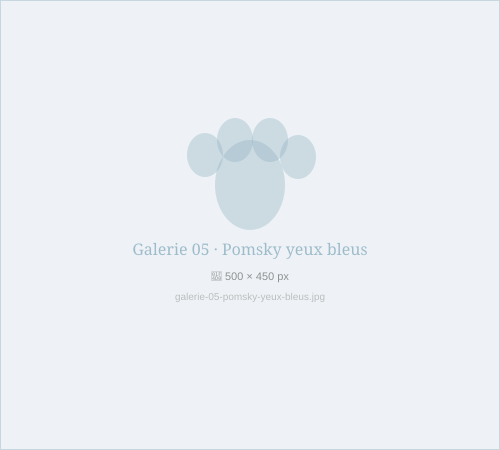
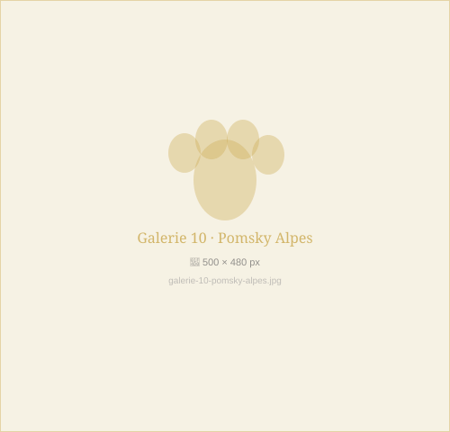

Nos races
Trois caractères,
une même passion
Du feu follet orange au loup des neiges aux yeux d'azur, chaque race porte en elle une magie unique.



Élevage familial depuis 2015
Nichés dans les Alpes valaisannes, nous élevons des Pomsky, Pomeranian et Husky sibériens d'exception — chaque chiot naît ici, grandit parmi nous, et part pour toujours.

Nos races
Du feu follet orange au loup des neiges aux yeux d'azur, chaque race porte en elle une magie unique.

À adopter
Chaque chiot repart avec son carnet de santé, ses vaccins, son puce et un trousseau de bienvenue.


Moments de vie






